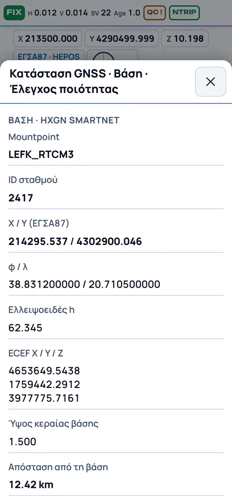

1. はじめに · 受信機と NTRIP の初回接続 · 画面とツール · 2. 受信機の接続 · 3. NTRIP · 4. Base / Rover · 5. 観測 · 6. 品質管理 · 7. 測設 · 8. COGO · 9. 座標系 · 海外での作業 · 10. マップと背景地図 · 11. ファイルとメール · 12. 写真 · バッテリー · ライセンス
1. はじめに
- Android のスマートフォンまたはタブレットに HEXIS_PAD.apk をインストールします (ブラウザ/ファイルアプリに「不明なアプリのインストール」を許可してください)。
- 初回は ライセンスコード (形式 PAD-XXXX-XXXX-XXXX) を求められます。入力して 有効化 を押してください — インターネットが必要なのはこの1回のみです。ライセンス を参照してください。
- 起動 → 求められたら Bluetooth、位置情報、カメラの権限を許可します。
- 受信機と NTRIP の初回接続: 初回接続のステップガイド を参照してください。
- アプリはプロジェクトを1つ開いた状態で起動します。新規プロジェクト、名前の変更、切り替えは メニュー → プロジェクト から行います。
- 上部バーの表示: 解 (FIX 緑、FLOAT オレンジ、SINGLE/DGPS 赤)、sH / sV (m、1s)、衛星数、PDOP、補正データ遅延、QC と NTRIP の表示。バーをタップ → GNSS 状態の詳細。


初回接続のステップガイド: 受信機と NTRIP
以下の手順は 1回だけ 行います。以後アプリは受信機とネットワークを記憶します: アプリを開いて受信機の電源を入れれば、自動で接続されます。
開始前に準備するもの: 充電済みの受信機、モバイルデータ (4G/5G) をオン にした端末、NTRIP 契約情報: caster host、port、ユーザー、パスワード。これらは契約している電子基準点網から提供されます。
A. Bluetooth で受信機を接続
- 受信機の電源を入れ、Bluetooth ランプが点灯するまで待ちます。
- Android でペアリング: 端末の設定 → Bluetooth → 新しいデバイスとペア設定 → 受信機を選択。名前は通常、受信機底面のラベルにあるシリアル番号 (S/N) です。コードを求められたら: 1234 または 0000。
より速い方法: 初回はアプリに 「受信機の初回接続」 画面が表示されます。「受信機のペアリング (Bluetooth)」 ボタンで Bluetooth 設定が直接開きます。受信機に NFC があれば、端末をかざすだけで済みます。 - HEXIS PAD に戻ります。 受信機を検出して自動で接続します。接続されない場合: ホーム → 受信機と RTK → 受信機を接続 → Bluetooth → 受信機を選択 → 接続。
- 初回は Android が 「付近のデバイス」 の権限を求めます。許可 を押してください。
- 確認: 上部バーに SINGLE または DGPS (赤) の解と衛星数が表示されます。受信機は位置を送信しています。RTK は NTRIP で得られます (手順 C)。


B. 受信機の Wi-Fi で接続 (Bluetooth で位置が届かない場合)
- ホーム → 受信機と RTK → 受信機の Wi-Fi で接続。
- メーカー を選び、次にリストから受信機を選択します。
- Android の 「デバイスを検索」 ダイアログが開きます。受信機の Wi-Fi ネットワークを選択 → 接続。受信機の Wi-Fi は アプリ専用 に使われ、NTRIP 用のインターネットはモバイルデータで継続します。
- 以後、受信機の電源が入ると、ホームの 受信機 カードに 「受信機を検出 · タップで接続」 と表示されます。タップすると接続します。Android の「デバイスを検索」ダイアログは 自分で要求した時だけ 開き、勝手に開くことはありません。端末が既に受信機の Wi-Fi に接続されている場合は、ダイアログなしで自動接続されます。

C. NTRIP: 電子基準点網からの RTK 補正
- ホーム → 受信機と RTK → NTRIP / RTK。
- 電子基準点網: 契約しているネットワークを選択します (例: HEPOS (ギリシャ地籍))。その他のネットワークは 「その他のネットワーク / 自前の caster」 を選び、Caster host と Port (通常 2101) を入力します。
- 契約の ユーザー と パスワード を入力します。
- リスト を押すと、ネットワークの mountpoint を取得します。ネットワークから指定されたもの (通常は MSM 形式の VRS) を選択します。
- 「GGA を送信 (VRS / ネットワークに必須)」 はチェックしたままにします。「受信機接続時に自動開始」 もチェックすると、毎回自動で開始します。
- 💾 プロファイル → 名前を付けて設定を保存します。ネットワークやアカウントが2つある場合、ワンタップで切り替えられます。
- 開始 を押します。補正が届くと上部バーの NTRIP 表示が 緑 になります。数秒 (視界が悪い場合は 1–2 分) で、解が FLOAT (オレンジ) から FIX (緑) に変わります。


D. 作業前のチェック
- アンテナ高: 画面下部の アンテナ高 欄にポール高を入力します。受信機に位相中心 offset がある場合は、受信機を接続 画面で1回だけ設定します。ここを誤ると すべて の標高が誤ります。
- 座標系: ホーム → 受信機と RTK → 座標系 → GGRS87 (HEPOS)。これにより平面位置と標高の両方に公式の変換グリッドが適用されます。
- 上部バーで FIX、sH / sV が小さく、QC 表示が緑であること。
- 観測や測設の前に 既知点 (例: 三角点、または座標と標高が既知の点) を1点観測して比較してください。

E. うまくいかない場合
| 症状 | 対処 |
|---|---|
| 受信機がリストに表示されない | ペアリングされていません。受信機を接続 → ⚙ Bluetooth 設定 → 新しいデバイスとペア設定。 |
| 接続 を押すとエラーになる | 受信機が他の機器またはメーカーアプリに接続されています。他の接続を閉じるか、受信機を再起動して、もう一度 接続 を押してください。 |
| 「接続しました」だが位置が届かない | 受信機が NMEA を送信していません。アプリが自動で有効化コマンドを送るので、数秒待ってください。それでもだめなら Wi-Fi 接続 (B) を試すか、🔎 受信機データのサンプル を押してサポートへ送ってください。 |
| 「NTRIP 用のインターネットがありません」 | モバイルデータをオンにしてください。端末を設定から受信機の Wi-Fi に接続している場合は、そこから切断し、アプリから受信機を接続してください (B)。 |
| mountpoint のリストが空、または NTRIP エラー | caster host と port を確認してください。ユーザーやパスワードに関するエラーなら、入力内容と契約が有効かを確認してください。 |
| NTRIP は緑だが DGPS または FLOAT のまま | 「GGA を送信」がチェックされ、正しい mountpoint (VRS / MSM) を選んだか確認してください。建物や樹木から離れた、上空の開けた場所へ移動してください。 |
ホーム画面、マップ、ツール列
ホーム画面 (列の ⌂ ボタン): 上部に プロジェクト と 受信機 が表示され、緑・オレンジ・赤の点で FIX、FLOAT、解なしを示します。その下に 6つのカテゴリ が同じ青色で並びます:
- 観測: 観測開始、連続、static、レーザーによる点、到達困難点、音声コマンド。
- 測設: 点、線、床/勾配、直角出し、グリッド。
- 計算: すべての COGO、距離/方位角、面積、直線交会、勾配、現場キャリブレーション。
- ファイルとプロジェクト: インポート、点、貼り付け、エクスポート/メール、プロジェクト。
- 受信機と RTK: 受信機接続、NTRIP、base/rover、IMU/気泡、レーザー、座標系。
- 設定: 設定、列のツール、ユーザーガイド。


カテゴリをタップすると、その項目だけ が表示されます。最初の基本項目は大きな色付きボタンです。‹ 戻る または端末の戻るボタンでカテゴリに戻ります。右上の マップ ボタンでマップへ直接移動します。
全画面マップ: ツール列は 左側に折りたたまれ、マップが全幅を使います。画面の左端 (青いタブ ›) をタップまたはスワイプすると開き、ツールを選ぶか、マップをタップするか、数秒経つと自動で閉じます。列のツールは「列のツール」で追加・削除します。常に開いておきたい場合: 設定 → 画面 → ツール列 →「常に開く」。上部に FIX、H/V、衛星数、Age、QC、NTRIP、下部に現在位置の座標が表示されます。

2. 受信機の接続
- Android の Bluetooth 設定 で受信機をペアリングします。
- メニュー → 受信機を接続 → Bluetooth、デバイスを選択 → 接続。
- 代替方法: Wi-Fi / TCP (受信機の IP とポート)、端末の GPS (方向確認のみ)、シミュレーター (訓練用 — マップを長押し =「そこへ歩く」)。
NMEA 0183 対応の受信機すべてに対応します。GGA は必須、GST で sH/sV 精度、GSA で PDOP が得られます。受信機がこれらを送信しない場合は「初期化コマンド」欄にコマンドを入力するか、Base / Rover → Rover コマンド を使用してください。
自動接続 — 設定不要
- 初回: 受信機が未登録の場合、「受信機の初回接続」画面が表示されます。受信機の電源を入れ、「受信機のペアリング」を押して Bluetooth リストから選択します。受信機に NFC があれば端末をかざします。戻るとアプリが受信機を検出して自動で接続します。
- 2回目以降: アプリを開き、受信機の電源を入れます (順序は問いません)。アプリは自動で接続し、受信機がまだオフなら数秒ごとに再試行します。設定済みなら NTRIP も自動で開始します。
- NMEA を送信しない受信機: アプリが自動で有効化コマンドを送ります。また、多くの受信機の公開プロトコル (Unicore、NovAtel、u-blox、BESTPOS/BESTNAV、NAV-PVT メッセージ) から直接位置を読み取ります。その場合「受信機プロトコルを認識しました」と表示されます。
- Wi-Fi 付き受信機 (Singular XYZ、CHC、South、Stonex、Hi-Target、Emlid): 最も安定するのは受信機の Wi-Fi です。受信機 →「📶 受信機の Wi-Fi で接続」→ メーカー → リストから受信機。アプリは自分専用に受信機の Wi-Fi に接続し (モバイルデータは NTRIP 用に残ります)、位置を出力するポートを自動で探し、以後は自動で接続します。受信機がオフの間は、バックグラウンドで静かに Wi-Fi の出現を確認し、電源が入ると自動で接続します — ダイアログは出ません。工場出荷時に NMEA を出力しない受信機 (例: Singular X1 Lite) では、受信機ページを1回だけ開いて TCP NMEA-0183 出力 (ポート 9000、GGA+GST+GSA、1 Hz) を有効にします — Bluetooth やメーカーのソフトには影響しません。近くで受信機の電源が入っていると、「受信機」カードに「受信機を検出 · タップで接続」と表示されます。Android の「デバイスを検索」ダイアログは、自分でタップした時だけ開きます。
- 受信機がメーカーの暗号化プロトコルしか送信しない場合は、受信機の Wi-Fi ページまたはメーカーアプリで NMEA 出力を1回だけ有効にします。「🔎 受信機データのサンプル」で、アプリが受信した内容を送信して対応追加を依頼できます。
- 🧪 他アプリの Bluetooth をキャプチャ: 受信機がメーカーのソフトにしか位置を送らない場合、受信機を接続 画面で「🧪 Bluetooth キャプチャ」を押し、4 つの手順 (開発者向けオプション →「Bluetooth HCI スヌープログ」、開始、メーカーのソフトで接続、停止して送信) に従ってファイルを送ってください。カウンターが 0 kB のままなら「🔍 システムファイルを検索して送信」を押すと、アプリが Android のログファイル (btsnoop_hci.log) を自動で見つけて送信します。受信機への対応は1回追加されれば全ユーザーに有効で、受信機や他のソフトには何も変更を加えません。
- 「切断」を押すと、再び「接続」を押すまで自動再接続を停止します。
受信機がリストに表示されない? 受信機を接続 画面で ⚙ Bluetooth 設定 → 新しいデバイスとペア設定 を押し、受信機を選択します。名前は通常、受信機底面のラベルにあるシリアル番号 (S/N)、例:「2124A0176」です。戻るとリストは自動で更新されます。「↻ リストを更新」ボタンもあります。GNSS 受信機の可能性があるものは ★ 付きで上位に、スピーカー・車・イヤホンは末尾に表示されます。
3. NTRIP (電子基準点網)
あらゆる NTRIP ネットワークに接続できます: HEPOS、URANUS、CivilPOS、HxGN SmartNet、JGC NET または自前の caster。接続情報は契約時にネットワークから提供されます。
- メニュー → NTRIP / RTK: caster host、port (通常 2101)、ユーザー、パスワード。
- リスト → caster の mountpoint を取得します。適切なもの (例: VRS / MSM) を選択します。
- 「GGA を送信」(VRS に必須) を有効にしたまま → 開始。
- データが届くと NTRIP 表示が緑になります。補正は Bluetooth で受信機に転送されます。ネットワークが切れても自動で再接続します。
ベースの情報
画面上部の ステータスバー (FIX、H/V、衛星数、Age) をタップします。「GNSS 状態」ウィンドウには、まずその時点で使用している ベース が表示されます: ネットワーク (例: HxGN SmartNet)、mountpoint、局 ID、プロジェクト座標系での ベースの座標、緯度/経度、楕円体高と ECEF、アンテナ高、ベースのアンテナと受信機、基準局からの距離、Age。これらの情報は補正メッセージそのもの (RTCM 1005/1006、1033) から読み取られるため、NTRIP の開始から数秒後に表示されます。

4. Base / Rover とベース変更
受信機メーカー
メニュー → Base / Rover: メーカーを選択します (CHC、South、Stonex、Hi-Target、ComNav、Singular XYZ、Kolida、Ruide、Tersus、SatLab、FOIF、Emlid、ArduSimple、Septentrio、Leica、GeoMax、Trimble、Spectra、Topcon、Sokkia)。ボードのコマンド系統が提案されます。お使いのモデルが異なる場合は変更してください。
| 系統 | HEXIS PAD の機能 |
|---|---|
| Unicore、NovAtel/ComNav、Septentrio | ベースの設置 (既知点または「ここ」)、無線機ポートへの RTCM3 出力の有効化、rover と NMEA 出力の設定。 |
| u-blox (Emlid 等) | 設定はメーカーのパネルで行います。HEXIS PAD は rover、NTRIP、観測、測設として動作します。 |
| Leica、Trimble、Topcon、Sokkia、Spectra、GeoMax、CHC | ベース/無線機の設定はクローズド — 各社のソフトで行います。HEXIS PAD は NMEA 経由の rover として動作します。 |
すべてのコマンドは送信前に表示されます — 受信機のマニュアルで確認してください (特にベース高が楕円体高か正標高か)。
新しいベース
- ＋ 新しいベース → 既知点で (点を選択) または 単独測位「ここ」。
- ベースのアンテナ高、RTCM ポート、ジオイド高 N。
- ベースへのコマンド… → 確認 → 送信 (ベースと Bluetooth 接続した状態で)。
- 使用中のベースに設定: 新しい点はすべてこのベースに紐づけられます。
ベースのシフト
ベースを単独測位/誤った位置に設置した場合: リストからベースを開く →「使用した位置」と「正しい位置」を入力 → シフトを適用。ベースのすべての点が dX/dY/dZ だけシフトされ、各点のメモに記録されます。
5. 観測 (Survey)


- 点名 (自動で増加)、コード (最近のコードがボタンで表示)、アンテナ高 (ポール + 位相中心)。
- 時間: 秒 (1、2、3、5、10、15、30 s、1 または 3 分) またはエポック。「その他…」で任意の値。エポック = 受信機の位置解 1 回分 (1 Hz で 1 エポック ≈ 1 s)。全エポックを平均します。FIX のみ: FLOAT エポックは除外されます。
- FIX 待ち (設定、初期値 10 s): 解がこの秒数連続して FIX を維持した時のみ観測を開始します。ボタンに「⏳ FIX 4/10 s」と表示されます。
- 点が保存されると、ボタンが一時的に 緑の「✓ 名前」 になり (音付き)、次の観測に備えて元に戻ります。
- サウンド (設定 → サウンド、音量とテスト付き): 点の保存音、FIX になった時の上昇音、FIX を失った時の低音と振動。
- ● 観測 → 品質チェックを実行します (セクション 6)。観測中にもう一度押す = キャンセル。
- コード付きの線: 同じコードの連続した点を線で結びます (DXF に出力)。
- ⌖ Offset: 距離 + 方位角による点 (手入力またはレーザーから)。
- 既存の名前で観測 → 独立した観測の比較と「チェックとして保存」の選択肢。
連続観測
ホーム → ⟳ 連続観測 (または列の ⟳ ツール)。距離ごと (例: 1 m ごと) または 時間ごと (例: 2 s ごと)、コード、「FIX のみ」、最大 sH を選択します。歩きながら点が自動保存され、名前は自動で増加します。マップ上に「⟳ 連続 · N 点」バーと ■ 停止 ボタンが表示されます。解が FIX でない、または sH が上限を超えた場合、バーに理由が黄色で表示され、点は保存されません。
Static
ホーム → ◷ Static。点、コード、アンテナ高、時間 (5 分〜2 時間、または「停止するまで」) を入力します。受信機を静止させると、アプリは:
- 毎秒 1 つの解を保持し、平均、sH、sV を計算します。FIX 解があればそれのみを使用します。FIX が一度もなければ、点に「FIX なし」と記録されます。
- 後処理用に 受信機の全データ をファイル
Documents/HEXIS PAD/Static/<プロジェクト>_<点>_<日付>.gnssに記録します。事務所での後処理には、受信機が生の観測データ (RTCM3 MSM またはメーカー独自形式) を出力する必要があります。 - 終了時に結果と「ファイルを共有 / メール」ボタンを表示します。
実行中にもう一度 ◷ を押すと、統計をリアルタイムで確認でき、早めに終了することもできます。
点から点へ線を作図
Survey で ✎ 作図 を押し、Draw lines グループで Line (独立した直線区間)、Polyline (連続線)、Spline (点を通る滑らかな曲線)、Polygon (閉じた多角形) を選びます。各ボタンには形を示すアイコンがあります。以後観測する点はすべて線に追加され、マップの上に種類と点数を示す緑のバーが表示されます。最後に観測した点から始めることもできます。バーの ↶ は線から最後の点を外し (点は残ります)、✕ は線をキャンセルし (全点が残ります)、✓ 終了 で線を完成させます。DXF エクスポートでは、線は LINE / POLYLINE / spline の場合は高密度 polyline として、レイヤー HP_<コード> に出力されます。
アンテナ高 = ポール + 受信機 offset
Survey の欄には ポール高のみ を入力します。アンテナ offset (基準点 ARP から位相中心まで、例: Singular X1 Lite / L1 では 0.068 m) は、受信機が認識されると自動で加算されます。または 設定 →「受信機アンテナ Offset」で設定します。欄のラベルは「ポール (+0.068)」と表示され、点のプロパティには両方が記録されます。
GST なしの位置誤差
受信機が GST を送信しない場合 (例: Wi-Fi 経由の Singular)、sH/sV は ~ 付きで表示されます (HDOP と解の種類からの推定: FIX ≈ 1.2 cm × HDOP)。QC チェックでは「警告」として扱われ、不合格にはなりません。観測エポックの実際のばらつきは通常どおりチェックされます。
観測中の到達困難点
Survey カードの Offset の隣に ✕ 困難 ボタンがあります。観測を終了する必要はありません:
- ✕ 困難 を押します。4 点の図が開きます。
- 「● 点 1 を観測」を押します (または「取得」と話す)。続いて 2、3、4。ボタンは自動で次へ進みます。
- 結果、直線の交差角、幾何配置が弱い場合の警告が表示されます。
- 💾 観測に保存 を押します。点には観測の 次の番号 と現在のコードが付きます。線に追加され (「コード付きの線」で観測中の場合)、番号付けは通常どおり続きます。
「補助点もリストに残す」で、4 つの補助点をリストに残すか削除するかを選べます。上部の選択肢には他の方法もあります: レーザーによる距離 + 方位角、距離による交会、直線の延長。
レーザー距離計 (DISTO 等) による 2–3 か所からの点
ポールが届かない点 (建物の角、柱、樹木、フェンスの向こうの桝) に。Survey カードの ⟟ レーザー ボタン。
- レーザーを Bluetooth の「キーボードモード」で接続し (DISTO: Bluetooth → Keyboard mode)、Android でペアリングします。
- 位置 1 に立ち、「● 位置 1: GNSS 観測」を押します (または「取得」と話す)。
- レーザーをポールに当てて点を照準し、レーザーの観測ボタンを押します。距離は自動で欄に入力されます。接続していない場合は手入力します。
- 数メートル離れた 位置 2 へ移動し、2 つの位置が点に対して 60°–120° の角度をなすようにします。再度 GNSS 観測と距離観測を行います。
- 解は 2 通りあります。左 / 右 (位置 1 から位置 2 を見て) を選ぶか、3 番目の位置 を追加します: アプリが自動で選択し、チェック用に残差 (RMS) を表示します。
- 💾 観測に保存: 点には次の番号とコードが付きます。
「距離補正」には、ポールに当てたレーザーの背面から測る場合のポール半径などを入力します。標高には「位置の平均 Z + dH」を選択します。幾何配置が弱い場合や距離が位置と整合しない場合は警告します。同じ機能が COGO → レーザーによる点 と 到達困難点 にもあります。
傾斜 ↔ 厳密な求心
IMU が有効な場合、Survey カードに ∠ 傾斜 60° ボタンがあります。押すと ⊙ 求心 に切り替わります。ステータスバーの ∠ 表示をタップするか、音声コマンド「求心」/「傾斜」でも同じです。
- ∠ 傾斜: 受信機の上限まで傾けたポールで観測します。
- ⊙ 求心: 求心許容値内 (例: ±0.5°) の鉛直ポールでのみ点を取得します。三角点、チェック点、ベースに使います。許容値を外れると、ボタンに「⏳ 求心外」と表示されて待機します。
- 各点には、観測方法と傾斜量が記録されます。
IMU — 傾斜ポールでの観測


受信機に IMU があれば、整準せずに観測できます。補正は 受信機内部で 行われ、アプリはメーカーの上限を超えて観測しないよう管理します。
- 自動認識: アプリは受信機が送信するデータから自動で判断します:
- 受信機が 傾斜補正の状態 を送信する場合、IMU はすぐに有効になり、許容される最大角度を音声でも知らせます。
- 傾斜角 のみを送信する場合 (単なる電子気泡の可能性もあります)、受信機に IMU があるかを 1回だけ 尋ねるので、カタログの最大傾斜を入力します。「いいえ」と答えると、求心気泡のみになります。
- アプリが知っているモデル (例: Emlid Reach RS3: 60°、CHC i73: 45°) では、メーカーの上限が設定されます。それ以外は、カタログ値を入力するまで 30° になります。
- すべて メニュー → IMU / 求心気泡 で変更できます。
- 表示: ステータスバーに ∠ 12°/60° と表示され、上限内は緑、上限外は赤になります。∠ INIT と表示された場合は IMU の初期化が必要です: メーカーの指示どおりにポールを揺らすか歩いてください。
- 保護: 上限を超えている間、または初期化完了前は、観測で 点を取得しません。ボタンに「⏳ 傾斜 65° > 60°」と表示され、警告音が鳴ります。上限内に入ると自動で観測します。測設、到達困難点、連続観測でも同様です。
- デジタル求心気泡: 観測エリアを隠さないよう、座標の横 に小さく表示されます (列を常に開いている場合は、列の「気泡 / IMU」ボタンにあります)。点はポールの傾く方向を示し、横に角度が表示されます。蛍光グリーン = 鉛直、オレンジ = 近い、赤 = 範囲外。1回タップ でマップ上に大きく表示して精密に求心でき (好きな位置へドラッグ可)、もう1回タップで非表示になります。長押し: 気泡 / IMU の設定。IMU ありの場合、赤い破線の円は受信機の傾斜上限です。
- IMU なし (電子気泡付き受信機): 気泡は鉛直許容値を表示します (例:「0.4° · ±0.5°」)。緑 = 求心済み、オレンジ = 近い、赤 = 範囲外。「求心許容値外では点を取得しない」を選ぶと、求心するまで観測を待機します。
- 気泡は常に表示されます。 受信機が傾斜を送信する場合、気泡は受信機の値を表示し、較正は一切不要 です。それ以外の場合、端末やタブレットがポールの台座に装着されていれば、端末のセンサー の値を「端末」表示付きで示します。
- 端末の較正 — 必要な時だけ自動: 受信機が傾斜を送信せず端末が未較正の場合、自動でメッセージが表示されます: ポールの先端を固定したまま、前後と左右に揺らしてください (数度、約 10″)。バーが満たされると気泡は自動で較正され、水準器もボタンも不要です。台座上の端末の位置を変えた場合のみ再実行します: 気泡に「較正」と表示されている時にタップするか、気泡の設定から行います。
- 独自の上限: 精度を上げるため、メーカーより小さい上限 (例: 30°) を設定できます。
- 高さ: 受信機がポール先端の位置を出力する場合、ポール高は 受信機側で 設定され、アプリでは再度差し引きません。この設定は初期状態で有効です。
- 記録: 各点に観測中の最大傾斜と受信機モデルが記録されます。
- アプリは受信機が角度を送信する場合にチェックします (PASHR、PSAT HPR、PTNL AVR、HPD メッセージ、または Unicore の傾斜状態)。角度を送信しない場合は「∠ IMU」と表示されるので、メーカーの上限を自分で守ってください。
- 作業前に、傾けたポールで 既知点を観測してください。これでポール高と初期化を確認できます。
フローティング観測ボタン
マップ上に丸い ● 観測 ボタンがあります。測設では紫になり 記録 と表示されます。
- タップ = 観測 (大きなボタンと同じ)。観測中はオレンジ (■)、点が保存されると緑 (✓) になります。
- ドラッグ = 手に合った位置へ移動し、位置を記憶します。ドラッグ中は観測しません。
- 設定 → フローティング観測ボタン:「✋ 左利き」/「右利き ✋」で対応する側へ移動します。手袋用の「大きなボタン」オプションがあり、無効にすることもできます。
- その下に Survey または Stakeout カードが開くと、ボタンは自動でカードの上へ移動します。
通話とバックグラウンド動作
受信機が接続されている間、または NTRIP や static の実行中は、アプリは 優先的にバックグラウンドでも 動作します。電話がかかってきても、他のアプリを開いても、画面が消えても、何も止まりません:
- 受信機との接続、NTRIP 補正、連続観測、static 記録は通常どおり継続します。
- 通知に「HEXIS PAD — 受信機接続済み · NTRIP」と表示されます。タップするとアプリに戻ります。初回は Android が通知の権限を求めるので、許可 を押してください。
- 通話中はアプリは話さず (音声確認)、音声コマンドのマイクは戻るまで停止します。
- 通話中に Bluetooth が切れても、バックグラウンドで自動再接続します。
- 受信機を切断し NTRIP を停止すると、通知は消えます。
一部の端末 (Xiaomi、Huawei、「バッテリー節約」が有効な Samsung) では、Android のバッテリー設定で HEXIS PAD を「制限なし」にしてください。
音声コマンド
🎙 音声 ツール、または ホーム → 音声コマンド、または 設定 → 音声コマンド。聞き取り中はマップ上に緑の「🎙 聞き取り中…」表示が出ます。タップすると無効になります。
- 「取得」 (または「観測」「記録」): 点を観測します。測設では Pn を記録します。
- 「削除」: 最後に観測した点を削除します。次の番号がその名前を再利用します。
- 「元に戻す」: 15 s 以内なら削除した点を復元します。画面には黄色の「↶ 元に戻す」ボタンもあります。
- 「次へ」/「前へ」: 測設点。
- 「キャンセル」/「ストップ」: 観測または連続観測を停止します。
アプリは音声で確認します (「P12 を保存しました」)。初回はマイクの権限を求めます。認識は端末の音声サービスで行われます。オフライン用の言語データをダウンロードしていれば (Android の設定 → 音声認識)、インターネットなしでも動作します。⌫ 最後を削除 ツールは、ワンタップで「削除」と同じ操作を行います。
6. RTK の連続品質管理 (QC)
NOAA/NGS の RTK ガイドライン (クラス RT1–RT4) と ISO 17123-8 の考え方に基づいています。全エポック と 全観測 をチェックします。
| クラス | 精度 95% (水平/鉛直) | PDOP | 衛星 | s (1s) | エポック |
|---|---|---|---|---|---|
| RT1 · 基準点網 / 器械点 | 2 / 4 cm | ≤ 2 | ≥ 7 | 1 cm | 180 |
| RT2 · 高精度測量 | 4 / 5 cm | ≤ 3 | ≥ 6 | 1.5 cm | 12 |
| RT3 · 地形測量 / 測設 | 6 / 8 cm | ≤ 4 | ≥ 5 | 3 cm | 15 |
| RT4 · 簡易測量 / GIS | 20 / 30 cm | ≤ 6 | ≥ 5 | 5 cm | 10 |
- リアルタイム: FIX 解、FIX 継続時間、sH/sV、PDOP、衛星数、補正データ遅延、ジャンプ検出 (ポール静止中の FIX での急な移動 — 誤った解の可能性。FIX 時間はリセットされます)。
- 観測ごと: エポックのばらつき (std)、最大偏差、最悪 sH/PDOP、最小衛星数、ジャンプ、非 FIX エポック。結果: OK / 注意 / 不合格 — 各点と CSV に保存されます。
- 既知点での チェック観測: 点 → 点 → ✓ チェック観測。クラスの許容値と比較します。
7. 測設 (Stakeout)


点
目標はリストから選択するか、◀ ▶ (次/前)、またはマップ上の ⌖ (点、DXF/DWG の頂点) で選びます。ターゲット円は、遠いと矢印を、近いと目盛り付きリングを表示します。緑 = 許容範囲内 (音と振動付き)。
方向基準:「基準: 移動」(歩く方向に対する前/後、右/左)、「基準: 北」(dX/dY)、「基準: 点」(点への方向、例: 杭の方を向いて)。切土 / 盛土 = 設計 Z − 地盤。
線
図面のポリライン (円弧を含む)、2 点、または観測した線。STA 空欄 = リアルタイムの追加距離と垂直距離。STA + Offset = 目標。▶ で「間隔」ずつ進みます。
面 (床、勾配)
COGO → 床勾配 から: 基準点 + 主/横断勾配 %、3 点による平面、または水平。設計 Z と切土/盛土をリアルタイムで表示します。
直角出し
基線 A→B: A からの STA と垂直距離 (+右)。チェック用対角線付きで矩形の 4 隅を作成します。
⛶ 大きな数字の全画面測設。● 記録: 測設した点を観測し、目標名に「n」を付けた名前 (例: P1 → P1n) で、目標からの dX/dY/dZ とともに、測設画面を離れずに保存します。その後自動で次へ進みます。📄 測設確認ファイル: 目標、測設点、偏差、許容範囲内/外の表示を含む CSV と TXT — 保存、共有、またはメール。許容値: 設定。
8. COGO

| ツール | 用途 |
|---|---|
| 距離 / 方位角 | 水平/斜距離、方位角 (度と grad)、dX dY dZ、勾配。 |
| 勾配観測 | 点 A から現在位置または点 B へ: %、‰、度、1:n。 |
| 直線の延長 | B の先 (または A の手前) の距離にある点、横方向の距離付き。 |
| 線形の点密度化 | A→B または図面の線上に間隔ごとの測設点を offset 付きで作成。 |
| 到達困難点 | 前 2 点 + 後 2 点: 点の手前の直線上で 1、2 を、先の直線上で 3、4 を観測します (ボタンが手順を案内し、自動で次へ進みます)。2 直線の交点が求める点で、直線の交差角、2 と 3 からの距離、Z 差、幾何配置が弱い場合の警告を表示します。その他: 距離 + 方位角 (レーザー、磁気偏角と子午線収差を考慮)、距離による交会、直線の延長、直線交会 (建物の角)。 |
| 床勾配 / 面 | 標高測設用の設計面を定義。 |
| 施工用直角出し | 直角のチェック (″ と mm)、基線から測設、矩形の角。 |
| 面積 / 周長 | 順に並べた点から (m² とストレマ)。 |
| 現場キャリブレーション | ローカル網の既知点による 4 パラメータ変換 + Z シフト、残差付き。 |
各点入力欄で: 名前を入力、☰ リスト、📍 現在位置、● 今すぐ観測。結果: 💾 保存 または ◎ 測設。
多角形の辺からのグリッド (植樹、杭)
COGO → ⁘ グリッド、または列の ⁘ ツール。
- 多角形: 観測した線 (例: コード「境界」で観測した境界)、DXF/DWG 図面の閉じたポリライン、または順に選んだ頂点。
- 基準辺: 列はこれに平行になります (offset)。初期値は最長辺で、マップ上に赤で表示されます。
- 間隔: 列内 (例: 5 m) と列間 (例: 5 m)。基準辺からの 1 列目の offset と、全境界からの最小距離も設定します。
- パターン: 正方形 または 千鳥 (1 列おきに半間隔ずらす)。「中央揃え」を選ぶと、各列の左右の余白が均等になります。
- プレビューは点数と列数とともに、マップ上にリアルタイムで表示されます (緑の点)。
- ✓ 測設点を作成: 点には名前 D1、D2… とコード「樹木」が付きます (変更可)。番号は 蛇行順 (往復) なので、「次へ」で常に隣の点へ移動します。測設は D1 からすぐに始まります。
Relocalize — 点を既知点へシフト
誤った FIX や間違ったベースで観測し、すべてずれてしまった点に使います。計算 → Relocalize (または ⇄ ツール)。
- 移動する点: すべて、特定の日に観測した点、または点 A から B まで。既知点と三角点は決して変更されません。
- 既知点:「＋ 既知点を追加」→ 誤った位置にある 観測点 を選択します。次に 正しい 座標を、リストの既知点から、または手入力で指定します。
- 既知点 1 点: dX、dY、dZ のシフトのみ。2 点: シフトと回転。3 点以上: 残差 (RMS) のチェックと、任意で縮尺も。
- dX、dY、dZ、回転、残差を確認し、適用 を押します。すべての点が正しい位置へ移動し、各点のメモに補正内容が記録されます。
- ↶ 最後の relocalize を元に戻す: 点は元どおりに戻ります。直近 10 件の補正が保持されます。
9. 座標系
GGRS87 — HEPOS 公式モデル (初期設定): ギリシャ地籍による HTRS07 → GGRS87 変換 (7 パラメータ + 2 km の dE/dN 補正グリッド、双一次補間) をアプリに内蔵 — ファイルは一切不要です。ギリシャ地籍の公式例で検証済みで、偏差は 1 mm 未満です。HEPOS および ETRS89 を提供するネットワークで使用してください。カステロリゾ島には専用モデル (3 シフト、TM87、lon0 = 27°) が適用されます。
その他の国: アプリが位置から座標系とジオイドを自動で選びます — 海外での作業を参照。任意の国向けに独自の proj4 定義を入力することもできます。標高: 受信機の正標高または楕円体高。ローカル網には: COGO → 現場キャリブレーション。
海外での作業
アプリは受信機の位置から現在いる国を自動で判別し、その国の公式座標系、標高用の国のジオイドモデル (無償で公開されている場合)、およびその国の常設基準局ネットワークの一覧 (現地版の HEPOS に相当) を NTRIP に設定します。
- ギリシャ: すべてそのまま — GGRS87 / HEPOS、ギリシャ地籍、KAEK — どの言語を選んでいても変わりません。言語によって座標系や背景地図が変わることはありません。
- ギリシャ国外: ギリシャ地籍と KAEK のレイヤーは表示されません (列にも背景地図にも表示されません)。
- 自動切り替えは空のプロジェクトのみ。プロジェクトにすでに点がある場合、アプリは一度だけ確認します: 現在の座標系を維持する、切り替える、または新しい国で新規プロジェクトを始める。作業の途中で座標系を変えることはありません。
- ジオイド: 初回にダウンロードされ (インターネットが必要)、オフライン作業のために端末に保存されます。正標高は受信機の楕円体高から H = h − N で計算されます。国のモデルがない場合、標高は受信機の値を使います。
- 手動: 受信機と RTK → 座標系。作業国とジオイドが表示され、自動選択をオフにしたり、「現在地に適用」をタップしたり、別の座標系 / 独自の proj4 を選んだりできます。
| 国 | 座標系 | ジオイド | NTRIP ネットワーク |
|---|---|---|---|
| キプロス | CGRS93 / LTM | 受信機 | CYPOS |
| スペイン | ETRS89 / UTM 29–31 (カナリア諸島: REGCAN95 / UTM 27–28) | EGM08-REDNAP (IGN) | ERGNSS (IGN), 地域網 |
| フランス | RGF93 / Lambert-93 | RAF20 (IGN) | Teria, Orphéon, Sat-Info |
| ドイツ / オーストリア | ETRS89 / UTM 32–33 | GCG2016 (BKG) (ドイツ) | SAPOS · APOS, EPOSA |
| イタリア | RDN2008 / UTM 32–34 | 受信機 | NetGEO, ItalPoS, 地域網 |
| ポーランド | PL-2000 ゾーン 5–8 | PL-geoid2021 (GUGiK) | ASG-EUPOS, TPI NET PRO |
| イギリス | British National Grid | OSGM15 | OS Net, SmartNet |
| オランダ | RD New | NLGEO2018 | NETPOS, 06-GPS |
| 日本 | JGD2011 平面直角座標系 (19 系) | GSIGEO2011 | Jenoba, ichimill |
| 韓国 / 中国 / ロシア | Korea 2000 ベルト · CGCS2000 3° · GSK-2011 | 受信機 | NGII · Qianxun · EFT-CORS |
| イスラエル / サウジアラビア | Israeli TM Grid · KSA-GRF17 / UTM | 受信機 | APN · SACORS |
| その他の国 | WGS84 / UTM ゾーン自動 | 受信機 | SmartNet, VRS Now |


10. マップと背景地図
列の ▦ 地籍 で、白地図上の筆界と KAEK の表示/非表示を切り替え、◐ 衛星 で白地図/衛星画像を切り替えます。≣ → 背景: Esri 衛星画像 / 道路 / 地形図、OpenStreetMap、Google (設定で自分の Map Tiles API key を入力)。オーバーレイ: Esri 注記、ギリシャ地籍 (筆界 WMS)、HEXIS KAEK (KAEK の境界と番号)。DXF/DWG の layers の表示切替もできます。
マップ上の点をタップ = 測設、✎ プロパティ (名前、コード、X/Y/Z、種類、メモ)、ℹ 詳細、🗑 削除。図面の頂点/線をタップ = 測設 または新しい点。ダブルタップ = ズームイン。📏 = マップ上で長さ/面積を計測。◎ = 現在位置を追従。⤢ = 全体表示。
11. ファイルとメール


インポート
メールから: 添付ファイルをタップ →「アプリで開く」→ HEXIS PAD。インポートウィザードが直接開きます。既にダウンロード済みの場合: インポート →「ファイルを選択」。ダイアログは直接 ダウンロード フォルダで開きます。
「ファイルを選択」ボタン1つで、種類は自動認識されます:
- TXT、CSV、XYZ、PNT、DAT: 任意の区切り文字 (カンマ、セミコロン、タブ、スペース)、小数点はカンマまたはピリオド、ギリシャ語エンコーディング。
- XLS、XLSX、ODS: シート選択。
- DXF、DWG: 背景図面。任意で dX/dY シフト、POINT を測設点としてインポート。
- KML、GeoJSON: 緯度・経度の点 → プロジェクト座標系に変換。
- 貼り付け: メール、Excel、メッセージのテキスト。
インポート前に プレビュー が表示されます: 列の表 (名前 / X / Y / Z / コード を自動認識 — 必要なら変更)、見出しの有無、X↔Y の入替、緯度/経度、点の簡易図、正しい範囲にあるかのチェック、重複名の処理 (名前を変更 / スキップ / 置き換え)。
他のアプリ (Gmail、ファイル、Drive、Viber) から: アプリで開く または 共有 → HEXIS PAD。ブラウザ版のタブレットでは: ファイルをマップ上にドラッグします。
エクスポート
クイック選択: 点のみ (TXT)、DXF (点 + 線)、または すべて。または形式を個別にチェックします。点は内部で完全な精度で保存され、エクスポート時の座標は 小数 4 桁 (0.1 mm) で出力されます — 設定 →「エクスポート時の座標小数桁」で 3 または 5 に変更できます。
TXT、CSV 完全版 (精度、QC、ベース、測設偏差、写真)、DXF (点/名前/標高/コードを layers に、線)、KML、GeoJSON、写真 — すべて ZIP に。💾 保存 (ドキュメント/HEXIS PAD)、↗ 共有、または ✉ メール (ファイル添付済みでメールアプリを開きます)。
TXT のベース情報: 「+ 各点に基準局 ID」(既定でオン) を有効にすると、TXT の各行の末尾に、その点を観測した ベースの ID が書き込まれます。例: P12,214295.537,4302900.046,62.345,樹木,HxGN_SmartNet/LEFK_RTCM3/2417 (ネットワーク / mountpoint / 局 ID)。ファイルの末尾には、# で始まる行にベースの一覧が書き込まれます: ID、ネットワーク、mountpoint、局 ID、プロジェクト座標系での ベースの座標、楕円体高、緯度/経度、ECEF、アンテナ高、各ベースから観測した点。TXT を読み込むプログラムが 名前,X,Y,Z,コード のみを想定している場合は、このオプションのチェックを外してください。CSV には常に BaseID、BaseX、BaseY の列があります。
すべてのエクスポートに写真: どのクイック選択 (「点のみ」「DXF」「すべて」) を選んでも、点の写真は 常に同梱 されます。photos/ フォルダを含む ZIP ファイルにまとめられ、各写真の名前は点名になります。測設ファイル (CSV + TXT + 写真) も同様です。ある送信で不要な場合は「点の写真」のチェックを外してください。
バッテリーと電源

- 画面を常にオン「作業中のみ」 (初期設定): 受信機が接続されていて直近 10 分以内に画面に触れた場合、または測設・連続観測・static の実行中は、画面が点灯したままになります。それ以外は通常どおり消灯し、受信機との接続と NTRIP は バックグラウンドで継続 します。タッチすれば再点灯し、元の画面に戻ります。
- マップは 表示内容が変わった時だけ再描画 されます: 移動した時や解が変わった時です。静止している間、処理は約 1/4 に下がります。
- 省電力: 充電していない時、バッテリー 30% 未満で自動 的に有効になります。マップと表示は毎秒 2 回更新され、画面は 10 分ではなく 3 分間操作がないと消灯します。
- 気泡は影響を受けません: 常に動作します。
- すべて 設定 → 電源 で設定します:「画面を常にオン」(作業中のみ / 常に / 端末の設定に従う) と「省電力」(自動 / 常に / しない)。
- ヒント: 最も電力を消費するのは画面の明るさです。日なたでは高くする必要がありますが、日陰や夜間は端末側で下げてください。
ライセンス

- コードは最初に入力した デバイスにロック されます。他のデバイスでは動作しません。端末を変更する場合は、ロック解除を依頼してください。
- 使用時間ライセンス (例: 現場 7 または 10 時間): アプリが画面に表示されている時間のみ カウントされます — 画面が消えたりアプリを離れたりするとカウントは止まります。終了 30′ 前と 10′ 前に警告します。時間は「ライセンス」に表示される日付まで有効です。
- 日数制の試用ライセンス: 日数は有効化した時点からカウントされます。
- どちらの種類でも、現場では インターネットなし で通常どおり動作します。使用時間は接続時に送信されます。ライセンスはインターネットがあれば自動で確認されます。デバイスが 7 日以上 まったくインターネットに接続しない場合 (オーナーデバイスは 30 日)、短い確認を求めます: モバイルデータをオンにして 有効化 を押してください。
- ライセンスは サーバーによって署名 されており、アプリは正規版であることを確認します。HEXIS PAD は必ず hexis-app.gr/pad.html からダウンロードしてください。改変されたバージョンは起動しません。
- 設定 → ライセンス: コード、残り時間または日数、使用量、正確な有効期限を確認できます。今すぐチェック で即座に更新されます (例: 延長後)。
- 有効期限が切れるか時間を使い切ると、コード画面が開きます。プロジェクトと点はデバイスに残ります。延長後、同じコードで再度 有効化 を押せば、中断したところから続けられます。
- デバイスの時刻は正しくなければなりません。時刻が巻き戻されると、アプリはインターネットによる確認を求めます。
- 自分のデバイス (オーナー): コード画面で「HEXIS-APP アカウントでオーナーログイン」を押し、hexis-app.gr のメールとパスワードを入力します。管理者アカウントは、有効期限も時間カウントもなしに、任意の数のデバイス (スマートフォン、タブレット) を永続的にロック解除します。パスワードはデバイスに保存されません。
- コード、延長、購入のお問い合わせ: 693 322 6314 (通話 · WhatsApp · Viber)。
12. 写真
📷 は Survey (最後の点)、測設 (最後の測設点)、または点の詳細から使えます。各写真には名前、コード、座標、日付、解の透かしが入り、点名でエクスポートされます。
保存場所: 各写真はプロジェクト内に、対応する点に紐づけて保存されます。点の詳細から開き、エクスポート → 写真 (ZIP) / メール で出力します。さらに、アプリをアンインストールしても失われないよう、端末にコピー がフォルダ ドキュメント/HEXIS PAD/写真/<プロジェクト>/ に点名で自動保存されます。コピーは 設定 →「各写真のコピーを端末に保存」でオフにできます。
測設時の記録: 点に到着したら ● 記録 を押します。新しい点 (例:「3n」) として、目標からの偏差 dX / dY / dZ とともに観測され、測設ファイルに追加されます。